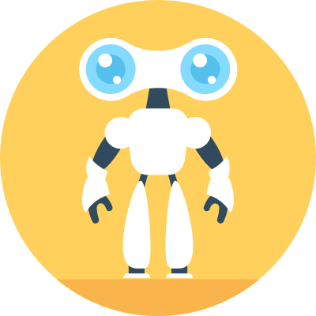

Let your team manage their support tickets 100% inside Slack

What Is TickyBot
TickyBot is a Slack Bot 🤖 that lets you use support tickets on Slack. This way, you don't need to leave your beloved channel to assist your users, if you don't feel like it.
With TickyBot you can easily check if you've received new tickets, change their status, or write a reply, and the ticket will instantly update itself on our site.
Support requests shouldn't be handled through Slack's direct messages. Image about someone asking silly questions and the workplace admin asking him/her to open a support ticket so other admins could look into the issue.
How It Works
You can add TickyBot to your Slack workplace by scrolling down or clicking here
Your users can open a ticket by typing /ticket and their message into the chat field
Once you or another admin solved their problems you can type /ticket close #id to close the ticket
Start Using TickyBot Today
TickyBot allows Slack teams to manage their support tickets 100% inside Slack, without having to switch between different apps.
... so you don't need to go back and forth with another app.